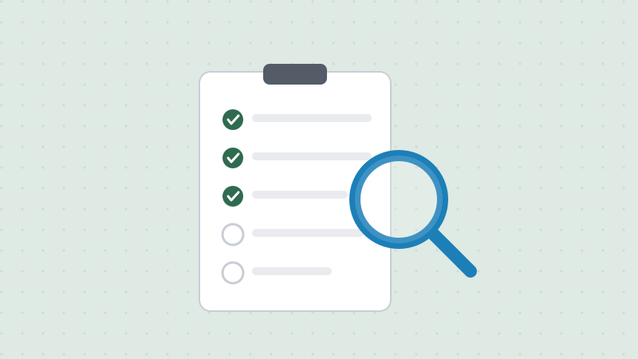

Do You Qualify? A Quick Eligibility Overview
Updated July 2026 · 4 min read · Ciudadano Ready Team

Before you get deep into studying for the civics and English tests, it's worth confirming the basic eligibility requirements actually apply to you. Here's the general picture: the version that covers most applicants.
Age
You generally need to be at least 18 years old at the time you file Form N-400.
Permanent residence, and for how long
You need continuous residence in the U.S. as a lawful permanent resident for at least 5 years immediately before filing, or just 3 years if you're married to and living with a U.S. citizen who has held that citizenship for the required period. "Continuous" is the key word: a single trip abroad of six months or more can call your continuous residence into question, even if your total time in the country otherwise adds up.
Physical presence
This is a separate requirement from continuous residence. You generally need to have actually been physically present in the U.S. for at least 30 months out of the 5 years before filing (or 18 months out of 3 years, on the marriage-based route). It's possible to technically maintain continuous residence while still falling short on physical presence if you've traveled frequently, so it's worth counting both separately.
Good moral character
USCIS looks at your conduct during the statutory period (generally the same 5 or 3 years), though certain issues from further back can still be relevant. This covers things like criminal history, honesty on your application and with USCIS officers, and compliance with tax and child support obligations.
English and civics knowledge
Unless you qualify for an exemption (generally tied to age and length of permanent residence, or a documented disability), you'll need to pass the English and civics portions of the test at your interview.
Attachment to the Constitution
You'll affirm your support for the principles of the U.S. Constitution and, if required, register with Selective Service (most men who were permanent residents between ages 18–26).
Filing early
You don't have to wait until the exact day you hit 5 (or 3) years: you can file Form N-400 up to 90 days before you'd otherwise meet the continuous residence requirement.
This overview is meant as a quick gut check, not a substitute for reviewing the official N-400 instructions or, if your situation involves any complications (extended travel, a criminal record, a prior immigration issue), talking to a licensed immigration attorney before you file.
This article is for general information only and is not legal advice. For guidance on your specific case, contact a licensed immigration attorney.